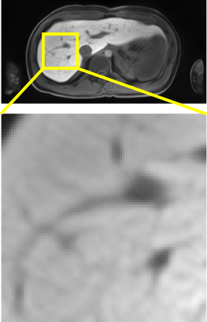
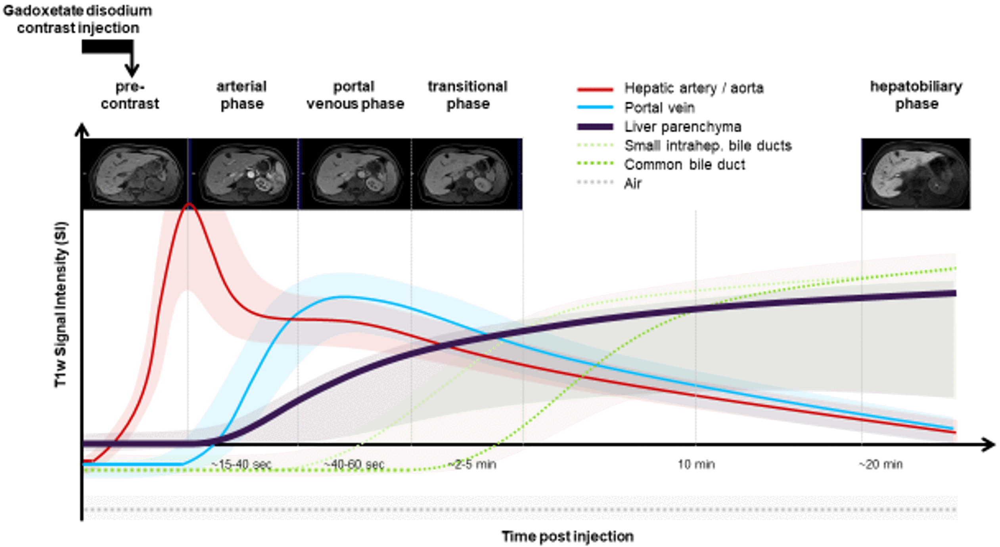
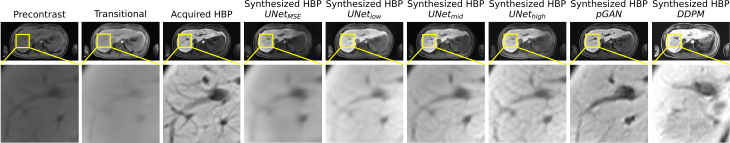
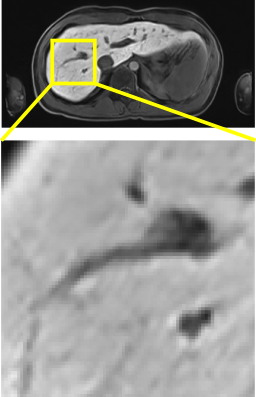
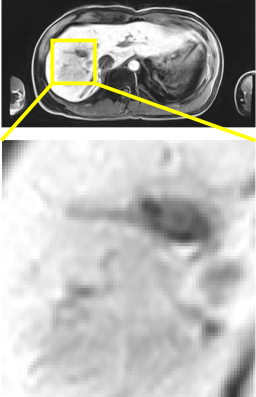

Abstract
Dynamic contrast-enhanced magnetic resonance imaging (DCE-MRI) plays a crucial role in the detection and characterization of focal liver lesions, with the hepatobiliary phase (HBP) providing critical diagnostic information. However, acquiring HBP images requires prolonged scan times, posing challenges for patient comfort and scanner efficiency.
In this study, we propose a deep learning approach for synthesizing HBP images from earlier contrast phases (precontrast and transitional), and compare three alternative generative models: a perceptual U-Net, a perceptual GAN, and a DDPM. We curated a multi-site DCE-MRI dataset from diverse clinical settings and introduced a contrast evolution score (CES) for data quality assessment, enhancing model performance. Quantitative evaluation using pixel-wise and perceptual metrics, alongside qualitative assessment through blinded radiological reviews, revealed that pGAN achieved superior quantitative performance but introduced heterogeneous contrast patterns in out-of-distribution samples. In contrast, U-Net provided consistent liver enhancement with fewer artifacts. DDPM showed inferior performance due to its inability to preserve fine structural details.
Our findings demonstrate the potential of synthetic HBP images to reduce MRI acquisition times while maintaining diagnostic quality, highlighting the clinical applicability of deep learning models for dynamic contrast enhancement in liver imaging.
Motivation

Model Synthesis Comparison



Focal Nodular Hyperplasia
Some text about FNHs


Adenomatosis
Some text about Adenomae


Hepatocellular Carcinoma
Some text about HCCs


Metastasis
Some text about Metastases


BibTeX
@article{hooge_2025,
author = {Hooge J., Sanroma-Guell G., Stavropoulou F., Ullmann A., Knobloch G., Klemens M., Schmidt C., Weckbach S., Bolz A.},
title = {Towards Faster Liver MRI: Generating Hepatobiliary Phase MRI with Perceptual and
Adversarial Models},
journal = {arXiv},
year = {2025},
}